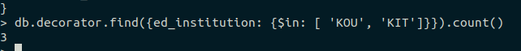

db queries
Запросы
Запрос 1
Найти работников-садовников с образованием из КОУ
db.decorator.find({ed_institution: "KOU", education: "gardener"}).pretty()
Запрос 2
Найти количество работников из двух институтов
db.decorator.find(ed_institution: {$in: ['KOU', 'KIT']}).count()

Запрос 3
Вывсети тип растения и дату посадки растения, которое было посажено самым первым
db.plants.find({}, {plant_type: 1, planting_date: 1}).sort({planting_date: 1}).limit(1)
Запрос 4
Вывести возраст и тип растения
db.plants.find({}, {_id: 0, age: 1, plant_type: 1}).pretty()
Запрос 5
Найти растения, которые были посажены в 2015 году
db.plants.find({planting_date: {$gte: new Date("2015-01-01"), $lt: new Date("2015-12-31")}}).pretty()
Запрос 6
Найти, сколько в среднем требуется литров воды на полив растений определенного типа
db.plants.aggregate(
[
{
$group: {_id: "$plant_type", avg: {$avg: "$water_amount"}}
}
]
)

Запрос 7
Найти средний возраст растений определенного типа
db.plants.aggregate(
[
{
$group: {_id: "$plant_type", avg: {$avg: "$age"}}
}
]
)
Запрос 7
Вывести растения, их возраст и режим полива, отсортировать по возрасту
db.plants.find({, {age: 1, watering_regime: 1}}).sort({age: 1})